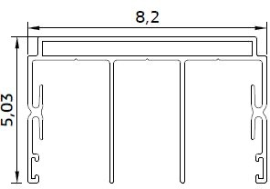
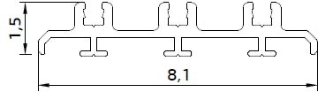
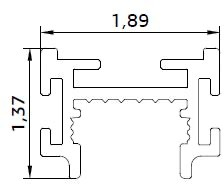
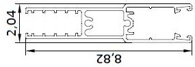
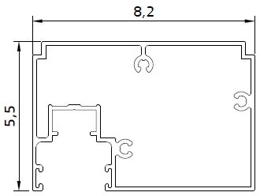
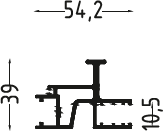
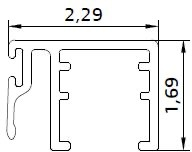
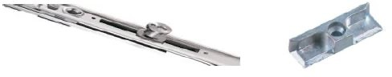
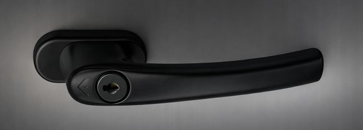
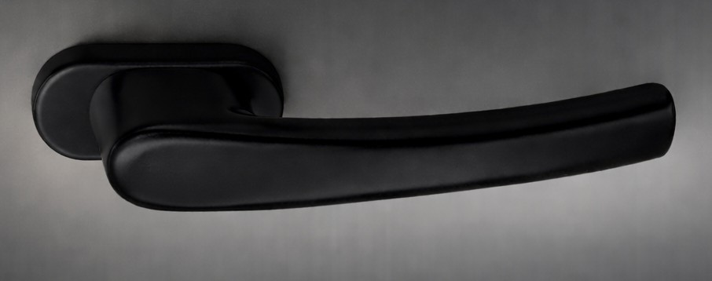

| Nr | Cod / Код | Denumire / Наименование | Cant. | UM | Preț | Suma | Fișier imagine | Imagine |
|---|---|---|---|---|---|---|---|---|
| 1 | 7951 | 6332 Profil 3 canale (superior) (buc600cm PRESS ) | 3 | m | 365,00 | 1.095,00 | image1.jpeg |  |
| 2 | 7952 | 6333 Profil prag plat 3 canale (buc600 PRESS) | 3 | m | 280,00 | 840,00 | image2.jpeg |  |
| 3 | 6771 | 11574 Profil superior fixare sticla (10mm) (buc700cm ) | 3 | m | 60,00 | 180,00 | image3.jpeg |  |
| 4 | 6768 | 11579 Profil inferior fixare sticla (10mm) (buc700 press ) | 3 | m | 230,00 | 690,00 | image4.jpeg |  |
| 5 | 7950 | 6334 Profil vertical perete (sistem 3 canale) (buc500cm PRESS ) | 5 | m | 350,00 | 1.750,00 | image5.jpeg |  |
| 6 | 6769 | 11572 (6305) Profil vertical fixare sticla (aluminiu) (buc500cm ) | 5 | m | 210,00 | 1.050,00 | image6.png |  |
| 7 | 6770 | 11646 Profil aluminiu conexiune sticla (10mm) (buc500cm PRESS ) | 10 | m | 70,00 | 700,00 | image7.jpeg |  |
| 8 | 6772 | Adaptor inox pentru prag (buc600cm ) | 3 | m | 113,00 | 339,00 | no image | |
| 9 | 6778 | Mecanism p/u sliding (1 lacata) (180grade MD ) | 2 | set | 210,00 | 420,00 | image8.jpeg |  |
| 10 | 10038 | Miner sistem sliding, fara cheie (negru) | 1 | buc | 155,00 | 155,00 | image9.jpeg |  |
| 11 | 10037 | Miner sistem sliding, cu cheie (negru) | 1 | buc | 300,00 | 300,00 | image10.jpeg |  |
| 12 | 6777 | EPDM Cauciuc p/u sliding | 5 | m | 8,00 | 40,00 | no image | |
| 13 | 6775 | Perie la 450 p/u sliding / panorama 48x480 | 10 | m | 7,00 | 70,00 | no image | |
| 14 | 6776 | Perie la 550 p/u sliding | 28 | m | 8,00 | 224,00 | no image | |
| 15 | 8983 | Conector din plastic p/u sliding (terminatie) (R | 4 | buc | 40,00 | 160,00 | no image | |
| 16 | 7953 | Accesorii p/u sliding Rotile, Plastic 3 canale | 1 | set | 2.800,00 | 2.800,00 | no image | |
| 17 | Servicii vopsire RAL | 9 | m2 | 200,00 | 1.800,00 | no image | ||
| 18 | Servicii asamblare | 9 | serviciu | 200,00 | 1.800,00 | no image |